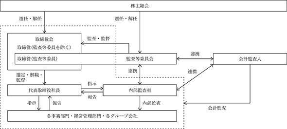

（注）提出日現在の発行数には、2023年12月１日からこの有価証券報告書提出日までの新株予約権の行使により発行された株式数は、含まれておりません。
当社は、新株予約権方式によるストックオプション制度を採用しております。当該制度は、会社法第236条、第238条及び第239条の規定に基づく新株予約権の発行によるものと、会社法第240条の規定に基づく新株予約権の発行によるものであります。
当該制度の内容は、次のとおりであります。
① 第７回新株予約権（有償ストックオプション）
※当事業年度の末日（2023年９月30日）における内容を記載しております。なお、当事業年度の末日から提
出日の前月末現在（2023年11月30日）において、これらの事項に変更はありません。
(注) １．新株予約権１個につき目的となる株式数は、100株であります。
ただし、新株予約権の割当日後、当社が株式分割（当社普通株式の無償割当てを含む。以下同じ。）、株式併合を行う場合は、次の算式により付与株式数を調整、調整の結果生じる１株未満の端数は、これを切り捨てる。
２．新株予約権の割当日後、当社が株式分割、株式併合を行う場合は、次の算式により払込金額を調整し、調整により生ずる１円未満の端数は切り上げる。
また、本新株予約権の割当日後、当社が当社普通株式につき時価を下回る価額で新株の発行または自己株式の処分を行う場合（新株予約権の行使に基づく新株の発行及び自己株式の処分並びに株式交換による自己株式の移転の場合を除く。）、 次の算式により行使価額を調整し、調整による１円未満の端数は切り上げる。
３．新株予約権の行使条件は以下のとおりであります。
① 新株予約権者は、割当日から本新株予約権の行使期間の終期に至るまでの間に株式会社東京証券取引所における当社普通株式の普通取引終値（以下「株価終値」という。）が一度でも下記（a）乃至（c）に掲げる条件を満たした場合、各号に掲げる割合を上限として本新株予約権を行使することができる。ただし、本新株予約権の割当日以後に行使価額が調整された場合には発行要項に基づき適切に調整されるものとする。
(ａ)株価終値が行使価額に150％を乗じた価額を上回った場合：33％
(ｂ)株価終値が行使価額に200％を乗じた価額を上回った場合：67％
(ｃ)株価終値が行使価額に250％を乗じた価額を上回った場合：100％
② 上記①にかかわらず、割当日から本新株予約権の行使期間の終期に至るまでの間に当社株価の終値が５取引日連続して行使価額に50％を乗じた価額を下回った場合、新株予約権者は残存するすべての本新株予約権を行使期間の満期日までに行使しなければならないものとする。ただし、次に掲げる場合に該当するときはこの限りではない。
(ａ)当社が上場廃止となる場合、破産手続開始、民事再生手続開始、会社更生手続開始、特別清算開始その他これらに準ずる倒産処理手続開始の申立てがなされる場合、その他本新株予約権発行日において前提とされていた事情に大きな変更が生じた場合
(ｂ)その他上記に準じ、当社が新株予約権者の信頼を著しく害すると客観的に認められる行為をなした場合
③ 新株予約権者の相続人による本新株予約権の行使は認めない。
④ 新株予約権者が本新株予約権を当社及び当社グループの役職員の立場から外れた際には放棄したものとみなし、放棄に該当する場合には当該新株予約権を行使することはできない。
⑤ 本新株予約権の行使によって、当社の発行済株式総数が当該時点における発行可能株式総数を超過することとなるときは、本新株予約権の行使を行うことはできない。
⑥ 各本新株予約権１個未満の行使を行うことはできない。
４．組織再編成行為に伴う新株予約権の交付に関する事項は次のとおりであります。
当社が、合併（当社が合併により消滅する場合に限る。）、吸収分割、新設分割、株式交換または株式移転（以上を総称して以下、「組織再編行為」という。）を行う場合において、組織再編行為の効力発生日に新株予約権者に対し、それぞれの場合につき、会社法第236条第１項第８号イからホまでに掲げる株式会社（以下、「再編対象会社」という。）の新株予約権を以下の条件に基づきそれぞれ交付することとする。ただし、以下の条件に沿って再編対象会社の新株予約権を交付する旨を、吸収合併契約、新設合併契約、吸収分割契約、新設分割計画、株式交換契約または株式移転計画において定めた場合に限るものとする。
① 交付する再編対象会社の新株予約権の数
新株予約権者が保有する新株予約権の数と同一の数をそれぞれ交付する。
② 新株予約権の目的である再編対象会社の株式の種類
再編対象会社の普通株式とする。
③ 新株予約権の目的である再編対象会社の株式の数
組織再編行為の条件を勘案のうえ、「新株予約権の目的である株式の種類及び数」に準じて決定する。
④ 新株予約権の行使に際して出資される財産の価額
交付される各新株予約権の行使に際して出資される財産の価額は、組織再編行為の条件等を勘案のうえ、「新株予約権の行使に際して出資される財産の価額または算定方法」で定められる行使価額を調整して得られる再編後行使価額に、上記③に従って決定される当該新株予約権の目的である再編対象会社の株式の数を乗じた額とする。
⑤ 新株予約権を行使することができる期間
「新株予約権を行使することができる期間」に定める行使期間の初日と組織再編行為の効力発生日のうち、いずれか遅い日から「新株予約権を行使することができる期間」に定める行使期間の末日までとする。
⑥ 新株予約権の行使により株式を発行する場合における増加する資本金及び資本準備金に関する事項
「増加する資本金及び資本準備金に関する事項」に準じて決定する。
⑦ 譲渡による新株予約権の取得の制限
譲渡による取得の制限については、再編対象会社の取締役会の決議による承認を要するものとする。
⑧ その他新株予約権の行使の条件
「新株予約権の行使の条件」に準じて決定する。
⑨ 新株予約権の取得事由及び条件
「新株予約権の取得に関する事項」に準じて決定する。
⑩ その他の条件については、再編対象会社の条件に準じて決定する。
② 第10回新株予約権（有償ストックオプション）
※当事業年度の末日（2023年９月30日）における内容を記載しております。なお、当事業年度の末日から提出日の前月末現在（2023年11月30日）において、これらの事項に変更はありません。
(注)１．新株予約権１個につき目的となる株式数は、100株であります。
ただし、新株予約権の割当日後、当社が株式分割、株式併合を行う場合は、次の算式により付与株式数を調整、調整の結果生じる１株未満の端数は、これを切り捨てる。
２．新株予約権の割当日後、当社が株式分割、株式併合を行う場合は、次の算式により払込金額を調整し、調整により生ずる１円未満の端数は切り上げる。
また、新株予約権の割当日後に時価を下回る価額で新株式の発行または自己株式の処分を行う場合は、次の算式により払込金額を調整し、調整により生ずる１円未満の端数は切り上げる。
３．新株予約権の行使条件は以下のとおりであります。
① 新株予約権者は、割当日から本新株予約権の行使期間の終期に至るまでの間に株式会社東京証券取引所における当社普通株式の普通取引終値（以下「株価終値」という。）が一度でも下記（a）乃至（c）に掲げる条件を満たした場合、各号に掲げる割合を上限として本新株予約権を行使することができる。ただし、本新株予約権の割当日以後に行使価額が調整された場合には発行要項に基づき適切に調整されるものとする。
(a) 株価終値が1,208円を上回った場合：33％
(b) 株価終値が1,510円を上回った場合：67％
(c) 株価終値が3,000円を上回った場合：100％
② 上記①にかかわらず、割当日から本新株予約権の行使期間の終期に至るまでの間に当社株価の終値が５取引日連続して行使価額に50％を乗じた価額を下回った場合、新株予約権者は残存するすべての本新株予約権を行使期間の満期日までに行使しなければならないものとする。ただし、次に掲げる場合に該当するときはこの限りではない。
(a) 当社が上場廃止となる場合、破産手続開始、民事再生手続開始、会社更生手続開始、特別清算開始その他これらに準ずる倒産処理手続開始の申立てがなされる場合、その他本新株予約権発行日において前提とされていた事情に大きな変更が生じた場合
(b) その他上記に準じ、当社が新株予約権者の信頼を著しく害すると客観的に認められる行為をなした場合
③ 新株予約権者の相続人による本新株予約権の行使は認めない。
④ 新株予約権者が当社及び当社グループの役員又は従業員の地位を喪失した場合、又はこれらの地位を有しない者に本新株予約権を譲渡したときは、当該譲受人を含め本新株予約権を行使できないものとする。但し、新株予約権者が当社及び当社グループの役員又は従業員の地位を喪失する前、又は、これらの地位を有しない者に譲渡する前に、取締役会の決議で、新株予約権者又は譲受人が本新株予約権を保有することを承認した場合には、この限りでない。
⑤ 本新株予約権の行使によって、当社の発行済株式総数が当該時点における発行可能株式総数を超過することとなるときは、本新株予約権の行使を行うことはできない。
⑥ 各本新株予約権１個未満の行使を行うことはできない。
４．組織再編成行為に伴う新株予約権の交付に関する事項は次のとおりであります。
当社が、合併（当社が合併により消滅する場合に限る。）、吸収分割、新設分割、株式交換または株式移転（以上を総称して以下、「組織再編行為」という。）を行う場合において、組織再編行為の効力発生日に新株予約権者に対し、それぞれの場合につき、会社法第236条第１項第８号イからホまでに掲げる株式会社（以下、「再編対象会社」という。）の新株予約権を以下の条件に基づきそれぞれ交付することとする。ただし、以下の条件に沿って再編対象会社の新株予約権を交付する旨を、吸収合併契約、新設合併契約、吸収分割契約、新設分割計画、株式交換契約または株式移転計画において定めた場合に限るものとする。
① 交付する再編対象会社の新株予約権の数
新株予約権者が保有する新株予約権の数と同一の数をそれぞれ交付する。
② 新株予約権の目的である再編対象会社の株式の種類
再編対象会社の普通株式とする。
③ 新株予約権の目的である再編対象会社の株式の数
組織再編行為の条件を勘案のうえ、「新株予約権の目的である株式の種類及び数」に準じて決定する。
④ 新株予約権の行使に際して出資される財産の価額
交付される各新株予約権の行使に際して出資される財産の価額は、組織再編行為の条件等を勘案のうえ、「新株予約権の行使に際して出資される財産の価額または算定方法」で定められる行使価額を調整して得られる再編後行使価額に、上記③に従って決定される当該新株予約権の目的である再編対象会社の株式の数を乗じた額とする。
⑤ 新株予約権を行使することができる期間
「新株予約権を行使することができる期間」に定める行使期間の初日と組織再編行為の効力発生日のうち、いずれか遅い日から「新株予約権を行使することができる期間」に定める行使期間の末日までとする。
⑥ 新株予約権の行使により株式を発行する場合における増加する資本金及び資本準備金に関する事項
「増加する資本金及び資本準備金に関する事項」に準じて決定する。
⑦ 譲渡による新株予約権の取得の制限
譲渡による取得の制限については、再編対象会社の取締役会の決議による承認を要するものとする。
⑧ その他新株予約権の行使の条件
「新株予約権の行使の条件」に準じて決定する。
⑨ 新株予約権の取得事由及び条件
「新株予約権の取得に関する事項」に準じて決定する。
⑩ その他の条件については、再編対象会社の条件に準じて決定する。
該当事項はありません。
③ 【その他の新株予約権等の状況】
第11回新株予約権及び第12回新株予約権
※当事業年度の末日（2023年９月30日）における内容を記載しております。なお、当事業年度の末日から提出日の前月末現在（2023年11月30日）において、これらの事項
に変更はありません。
(注) １．新株予約権１個につき目的となる株式数は、100株であります。
ただし、新株予約権の割当日後、当社が株式分割（当社普通株式の無償割当てを含む。以下同じ。）、株式併合を行う場合は、次の算式により付与株式数を調整、調整の結果生じる１株未満の端数は、これを切り捨てる。
２．新株予約権の割当日後、当社が株式分割、株式併合を行う場合は、次の算式により払込金額を調整し、調整により生ずる１円未満の端数は切り上げる。
また、本新株予約権の割当日後、当社が当社普通株式につき時価を下回る価額で新株の発行または自己株式の処分を行う場合（新株予約権の行使に基づく新株の発行及び自己株式の処分並びに株式交換による自己株式の移転の場合を除く。）、 次の算式により行使価額を調整し、調整による１円未満の端数は切り上げる。
３.本新株予約権の行使に際して出資される財産の価額
各本新株予約権の行使に際して出資される財産は金銭とし、その価額は、行使価額に割当株式数を乗じた額とする。
４．本新株予約権の行使に際して出資される当社普通株式１株当たりの金銭の額において、行使価額は、当初1,000円(第11回新株予約権証券において「当初行使価額」
という。)及び当初1,300円(第12回新株予約権証券において「当初行使価額」という。)とする。但し、行使価額は本欄第５項に定める修正及び第６項に定める調整
を受ける。
５．行使価額の修正
(1) 当社は、当社取締役会の決議により行使価額の修正を決定することができ、かかる決定がなされた場合、行使価額は本項に基づき修正される。本項に基づき行使価額の修正を決議した場合、当社は直ちにその旨を本新株予約権者に通知するものとし、当該通知が行われた日(同日を含む。)から起算して10取引日目の日又は別途当該決議で定めた10取引日目の日より短い日以降別記「新株予約権の行使期間」欄に定める期間の満了日まで、本項第(2)号を条件に、行使価額は、各修正日の前取引日(但し、前取引日が当社普通株式に係る株主確定日（株式会社証券保管振替機構の株式等の振替に関する業務規程第144条に定義する株主確定日をいう。）又は株式会社証券保管振替機構において本新株予約権の行使請求を取り次ぎがない日に該当する場合は、それぞれ株主確定日の4取引日前の日又は株式会社証券保管振替機構において本新株予約権の行使請求の取り次ぎが行えた直近の取引日とする。)の東京証券取引所における当社普通株式の普通取引の終値(同日に終値がない場合には、その直前の終値)の90％に相当する金額(円位未満小数第３位まで算出し、小数第３位の端数を切り上げた金額)に修正される。
(2) 行使価額は下限行使価額を下回らないものとする。上記の計算によると修正後の行使価額が下限行使価額を下回ることとなる場合、修正後の行使価額は下限行使価額
とする。
６．行使価額の調整
(1) 当社は、本新株予約権の発行後、下記第(2)号に掲げる各事由により当社の発行済普通株式の総数に変更が生じる場合又は変更が生じる可能性がある場合には、次に定める算式をもって行使価額を調整する。
(2) 新株発行等による行使価額調整式により行使価額の調整を行う場合及び調整後行使価額の適用時期については、次に定めるところによる。
①本項第(5)号②に定める時価を下回る払込金額をもって当社普通株式を新たに発行し、又は当社の保有する当社普通株式を処分する場合(無償割当てによる場合を含む。)(但し、当社の役員及び従業員並びに当社子会社の役員及び従業員を対象とする譲渡制限付株式報酬として株式を発行又は処分する場合、新株予約権(新株予約権付社債に付されたものを含む。)の行使、取得請求権付株式又は取得条項付株式の取得、その他当社普通株式の交付を請求できる権利の行使によって当社普通株式を交付する場合、及び会社分割、株式交換、株式交付又は合併により当社普通株式を交付する場合を除く。)
調整後行使価額は、払込期日(募集に際して払込期間を定めた場合はその最終日とし、無償割当ての場合はその効力発生日とする。)以降、又はかかる発行若しくは処分につき株主に割当てを受ける権利を与えるための基準日がある場合はその日の翌日以降これを適用する。
②株式の分割により普通株式を発行する場合
調整後行使価額は、株式の分割のための基準日の翌日以降これを適用する。なお、新株発行等による行使価額調整式で使用する新発行・処分株式数は、株式の分割により増加する当社の普通株式数をいうものとする。
③本項第(5)号②に定める時価を下回る払込金額をもって当社普通株式を交付する定めのある取得請求権付株式又は本項第(5)号②に定める時価を下回る払込金額をもって当社普通株式の交付を請求できる新株予約権(新株予約権付社債に付されたものを含む。)を発行又は付与する場合(但し、当社の役員及び従業員並びに当社子会社の役員及び従業員を対象とするストック・オプションを発行する場合を除く。)
調整後行使価額は、取得請求権付株式の全部に係る取得請求権又は新株予約権の全部が当初の条件で行使されたものとみなして新株発行等による行使価額調整式を適用して算出するものとし、払込期日(新株予約権の場合は割当日)以降又は(無償割当ての場合は)効力発生日以降これを適用する。但し、株主に割当てを受ける権利を与えるための基準日がある場合には、その日の翌日以降これを適用する。
④当社の発行した取得条項付株式又は取得条項付新株予約権(新株予約権付社債に付されたものを含む。)の取得と引換えに本項第(5)号②に定める時価を下回る価額をもって当社普通株式を交付する場合
調整後行使価額は、取得日の翌日以降これを適用する。
上記にかかわらず、当該取得条項付株式又は取得条項付新株予約権(新株予約権付社債に付されたものを含む。)に関して、当該調整前に本号③による行使価額の調整が行われている場合には、調整後行使価額は、当該調整を考慮して算出するものとする。
⑤本号①乃至③の場合において、基準日が設定され、かつ、効力の発生が当該基準日以降の株主総会、取締役会その他当社の機関の承認を条件としているときには、本号①乃至③にかかわらず、調整後行使価額は、当該承認があった日の翌日以降これを適用する。この場合において、当該基準日の翌日から当該承認があった日までに本新株予約権の行使請求をした本新株予約権者に対しては、次の算出方法により、当社普通株式を追加的に交付する。
この場合、１株未満の端数を生じたときはこれを切り捨てるものとする。
(3) ①当社は、本新株予約権の発行後、本号②に定める配当を実施する場合には、次に定める算式(以下「配当による行使価額調整式」といい、新株発行等による行使価額調整式とあわせて「行使価額調整式」と総称する。)をもって行使価額を調整する。
②「１株当たりの配当」とは、別記「新株予約権の行使期間」欄記載の本新株予約権を行使することができる期間の末日までの間に到来する配当に係る各基準日につき、
当社普通株式１株当たりの剰余金の配当(会社法第455条第２項及び第456条の規定により支払う金銭も含む。金銭以外の財産を配当財産とする剰余金の配当の場合に
はかかる配当財産の簿価を配当の額とする。)の額をいう。１株当たりの配当の計算については、円位未満小数第２位まで算出し、小数第２位を四捨五入する。
③ 配当による行使価額の調整は、当該配当に係る基準日に係る会社法第454条又は第459条に定める剰余金の配当決議が行われた日から５取引日目以降これを適用する。
(4) 行使価額調整式により算出された調整後行使価額と調整前行使価額との差額が１円未満にとどまる場合は、行使価額の調整は行わない。但し、その後行使価額の調整を必要とする事由が発生し、行使価額を調整する場合には、行使価額調整式中の調整前行使価額に代えて調整前行使価額からこの差額を差し引いた額を使用する。
(5) ①行使価額調整式の計算については、円位未満小数第２位まで算出し、小数第２位を四捨五入する。
②行使価額調整式で使用する時価は、新株発行等による行使価額調整式の場合は調整後行使価額が初めて適用される日(但し、本項第(2)号⑤の場合は基準日)又は配当による行使価額調整式の場合は当該配当に係る基準日に先立つ45取引日目に始まる30連続取引日の東京証券取引所における当社普通株式の普通取引の終値の平均値(終値のない日数を除く。)とする。この場合、平均値の計算は、円位未満小数第２位まで算出し、小数第２位を四捨五入する。
③新株発行等による行使価額調整式で使用する既発行株式数は、株主に割当てを受ける権利を与えるための基準日がある場合はその日、また、かかる基準日がな
い場合は、調整後行使価額を初めて適用する日の１か月前の日における当社の発行済普通株式の総数から、当該日において当社の保有する当社普通株式を控除し
た数とする。また、上記第(2)号②の場合には、新株発行等による行使価額調整式で使用する新発行・処分株式数は、基準日において当社が有する当社普通株式に
割り当てられる当社の普通株式数を含まないものとする。
(6) 上記第(2)号及び第(3)号の行使価額の調整を必要とする場合以外にも、次に掲げる場合には、当社は、本新株予約権者と協議の上、その承認を得て、必要な行
使価額の調整を行う。
①株式の併合、会社分割、株式交換、株式交付又は合併のために行使価額の調整を必要とするとき。
②その他当社の普通株式数の変更又は変更の可能性が生じる事由の発生により行使価額の調整を必要とするとき。
③行使価額を調整すべき複数の事由が相接して発生し、一方の事由に基づく調整後の行使価額の算出にあたり使用すべき時価につき、他方の事由による影響を考慮する必要があるとき。
(7) 行使価額の調整を行うとき(下限行使価額が調整されるときを含む。)は、当社は、調整後行使価額の適用開始日の前日までに、本新株予約権者に対し、かかる
調整を行う旨及びその事由、調整前行使価額、調整後行使価額(調整後の下限行使価額を含む。)並びにその適用開始日その他必要な事項を書面で通知する。但し
、上記第(2)号⑤に定める場合その他適用開始日の前日までに上記通知を行うことができない場合には、適用開始日以降速やかにこれを行う。
第１回無担保転換社債型新株予約権付社債
※当事業年度の末日（2023年９月30日）における内容を記載しております。なお、当事業年度の末日から提出日の前月末現在（2023年11月30日）において、これらの事項
に変更はありません。
※当該行使価額修正条項付新株予約権付社債券の特質
１．本転換社債新株予約権の行使請求（以下、本「１ 新規発行新株予約権付社債（第１回無担保転換社債型新株予約権付社債）」において「行使請求」という。）により当社が交付する当社普通株式の数は、株価の下落により増加することがある。当該株式数は行使請求に係る本転換社債新株予約権が付された本社債の金額の総額を当該行使請求の効力発生日において適用のある転換価額で除して得られる数であるため、別記「新株予約権の行使時の払込金額」欄ハ乃至ルに従い転換価額が修正又は調整された場合には、本転換社債新株予約権の行使請求により当社が交付する当社普通株式の数は増加又は減少する。
２．転換価額の修正
(1）本新株予約権付社債の転換価額は、2024年８月30日、2025年６月30日及び2026年５月29日（それぞれを以下本欄において「修正日」という。）に、修正日（同日を含まない。）に先立つ40連続取引日間（但し、(ⅰ)当該取引日の東京証券取引所における当社普通株式の普通取引の売買代金が、当該40連続取引日の初日（同日を含まない。）に先立つ40連続取引日間の東京証券取引所における当社普通株式の普通取引の売買代金の日次平均の250％に相当する金額を超え、かつ、(ⅱ)当該取引日のブルームバーグの公表資料に基づく東京証券取引所における当社普通株式の普通取引の売買高加重平均価格が、その直前取引日の東京証券取引所における当社普通株式の普通取引の終値を超過する取引日は除外される（なお、「新株予約権の行使時の払込金額」欄ホ乃至ヌに基づく調整の原因となる事由が発生した場合には、当該事由を勘案して適切に調整される。）。この場合、40連続取引日から当該除外された取引日を除いた残りの取引日を参照して算定する。）のブルームバーグの公表資料に基づく東京証券取引所における当社普通株式の普通取引の売買高加重平均価格の１円未満を切り下げた金額（但し、当該40連続取引日中に「新株予約権の行使時の払込金額」欄ホ乃至ヌに基づく調整の原因となる事由が発生した場合には、当該事由を勘案して適切に調整される。）の90％に相当する金額（円位未満小数第３位まで算出し、小数第３位の端数を切り上げた金額）がその時点で有効な転換価額を１円以上下回っている場合は当該金額に修正される。本項において「取引日」とは、東京証券取引所において売買立会が行われる日をいう。
(2）上記第(1)号にかかわらず、上記第(1)号に基づく修正後の転換価額が423円（以下「下限転換価額」といい、別記「新株予約権の行使時の払込金額」欄ホ乃至ヌの規定による調整を受ける。）を下回ることとなる場合には、転換価額は下限転換価額とする。
３．転換価額の修正頻度
本欄第２項第(1)号の記載に従い修正される。
４．転換価額の下限等
転換価額の下限については本欄第２項第(2)号に記載のとおりである。なお、本転換社債新株予約権の行使により交付される当社普通株式の数は、行使請求に係る本転換社債新株予約権が付された本社債の金額の総額を当該行使請求の効力発生日において適用のある転換価額で除して得られる数となる。
５．繰上償還条項等
本新株予約権付社債は、上記「償還の方法」第２項第(2)号乃至第(4)号のとおり、繰上償還されることがある。
(注) １．新株予約権１個につき目的となる株式数は、100株であります。
ただし、新株予約権の割当日後、当社が株式分割（当社普通株式の無償割当てを含む。以下同じ。）、株式併合を行う場合は、次の算式により付与株式数を調整、調整の結果生じる１株未満の端数は、これを切り捨てる。
２．新株予約権の割当日後、当社が株式分割、株式併合を行う場合は、次の算式により払込金額を調整し、調整により生ずる１円未満の端数は切り上げる。
また、本新株予約権の割当日後、当社が当社普通株式につき時価を下回る価額で新株の発行または自己株式の処分を行う場合（新株予約権の行使に基づく新株の発行及び自己株式の処分並びに株式交換による自己株式の移転の場合を除く。）、 次の算式により行使価額を調整し、調整による１円未満の端数は切り上げる。
３.新株予約権の行使時の払込金額
イ．各本転換社債新株予約権の行使に際して出資される財産は、当該各本転換社債新株予約権に係る各本社債の全部とし、出資される財産の価額は、当該各本転換
社債新株予約権に係る各本社債の金額と同額とする。
ロ．各本転換社債新株予約権の行使により交付する当社の普通株式の数を算定するにあたり用いられる価額（以下「転換価額」という。）は、当初金846円とする。
但し、転換価額は本欄ハ及びニに定める修正及びホ乃至ヌに定める調整を受ける。
ハ．本欄ニを条件に、転換価額は、修正日に、修正日（同日を含まない。）に先立つ40連続取引日間（但し、取引日は上記「当該行使価額修正条項付新株予約権付
社債券等の特質」第２項第(1)号記載のとおり除外されることがある。）のブルームバーグの公表資料に基づく東京証券取引所における当社普通株式の普通取引の売
買高加重平均価格の１円未満を切り下げた金額（但し、当該40連続取引日中に本欄ホ乃至ヌに基づく調整の原因となる事由が発生した場合には、当該事由を勘案し
て適切に調整される。）の90％に相当する金額（円位未満小数第３位まで算出し、小数第３位の端数を切り上げた金額）がその時点で有効な転換価額を１円以上下
回っている場合は当該金額に修正される。
ニ．転換価額は下限転換価額を下回らないものとする。上記の計算による修正後の転換価額が下限転換価額を下回ることとなる場合、転換価額は下限転換価額と
する。また、転換価額は当初転換価額（但し、本号ホ乃至ヌによる調整を受ける。）を上回らないものとする。上記の計算によると修正後の転換価額が当初転換価
額を上回ることとなる場合、転換価額は当初転換価額とする。
ホ．当社は、本新株予約権付社債の発行後、本欄ヘに掲げる各事由により当社の発行済普通株式の総数に変更が生じる場合又は変更が生じる可能性がある場合には
、次に定める算式（以下「新株発行等による転換価額調整式」という。）をもって転換価額を調整する。
へ．新株発行等による転換価額調整式により転換価額の調整を行う場合及び調整後転換価額の適用時期については、次に定めるところによる。
① 本欄リ②に定める時価を下回る払込金額をもって当社普通株式を交付する場合（無償割当てによる場合を含む。）（但し、当社の役員及び従業員並びに当社子
会社の役員及び従業員を対象とする譲渡制限付株式報酬として株式を交付する場合、新株予約権（新株予約権付社債に付されたものを含む。）の行使、取得請求権
付株式又は取得条項付株式の取得、その他当社普通株式の交付を請求できる権利の行使によって当社普通株式を交付する場合、及び会社分割、株式交換、合併又は
株式交付により当社普通株式を交付する場合を除く。）
調整後転換価額は、払込期日（募集に際して払込期間を定めた場合はその最終日とし、無償割当ての場合はその効力発生日とする。）以降、又はかかる交付につき
株主に割当てを受ける権利を与えるための基準日がある場合はその日の翌日以降これを適用する。
② 株式の分割により普通株式を発行する場合
調整後転換価額は、株式の分割のための基準日の翌日以降これを適用する。なお、新株発行等による転換価額調整式で使用する交付株式数は、株式の分割により増
加する当社の普通株式数をいうものとする。
③ 本欄リ②に定める時価を下回る払込金額をもって当社普通株式を交付する定めのある取得請求権付株式又は本欄リ②に定める時価を下回る払込金額をもって当
社普通株式の交付を請求できる新株予約権（新株予約権付社債に付されたものを含む。）を発行又は付与する場合（但し、当社の役員及び従業員並びに当社子会社
の役員及び従業員を対象とするストック・オプションを発行する場合を除く。）
調整後転換価額は、取得請求権付株式の全部に係る取得請求権又は新株予約権の全部が当初の条件で行使されたものとみなして新株発行等による転換価額調整式を
適用して算出するものとし、払込期日（新株予約権の場合は割当日）以降又は（無償割当ての場合は）効力発生日以降これを適用する。但し、株主に割当てを受け
る権利を与えるための基準日がある場合には、その日の翌日以降これを適用する。
④ 当社の発行した取得条項付株式又は取得条項付新株予約権（新株予約権付社債に付されたものを含む。）の取得と引換えに本欄リ②に定める時価を下回る価額
をもって当社普通株式を交付する場合
調整後転換価額は、取得日の翌日以降これを適用する。
上記にかかわらず、当該取得条項付株式又は取得条項付新株予約権（新株予約権付社債に付されたものを含む。）に関して、当該調整前に上記③による転換価額の
調整が行われている場合には、調整後転換価額は、当該調整を考慮して算出するものとする。
⑤ 本欄へ①乃至③の場合において、基準日が設定され、かつ、効力の発生が当該基準日以降の株主総会、取締役会その他当社の機関の承認を条件としているとき
には、本欄へ①乃至③にかかわらず、調整後転換価額は、当該承認があった日の翌日以降これを適用する。この場合において、当該基準日の翌日から当該承認があ
った日までに本転換社債新株予約権の行使請求をした本転換社債新株予約権者に対しては、次の算出方法により、当社普通株式を追加的に交付する。
この場合、１株未満の端数を生じたときはこれを切り捨てるものとする。
ト．当社は、本新株予約権付社債の発行後、本欄①に定める配当を実施する場合には、次に定める算式（以下「配当による転換価額調整式」といい、新株発行等によ
る転換価額調整式とあわせて「転換価額調整式」と総称する。）をもって転換価額を調整する。
① 「１株当たりの配当」とは、行使請求期間（別記「新株予約権の行使期間」欄で定義する。）の末日までの間に到来する配当に係る各基準日につき、当社普通株
式１株当たりの剰余金の配当（会社法第455条第２項及び第456条の規定により支払う金銭も含む。金銭以外の財産を配当財産とする剰余金の配当の場合には、かかる
配当財産の簿価を配当の額とする。）の額をいう。１株当たりの配当の計算については、円位未満小数第２位まで算出し、小数第２位を四捨五入する。
② 配当による転換価額の調整は、当該配当に係る基準日に係る会社法第454条又は第459条に定める剰余金の配当決議が行われた日から５取引日目以降これを適用
する。
チ．転換価額調整式により算出された調整後転換価額と調整前転換価額との差額が１円未満にとどまる場合は、転換価額の調整は行わない。但し、その後転換価額の
調整を必要とする事由が発生し、転換価額を調整する場合には、転換価額調整式中の調整前転換価額に代えて調整前転換価額からこの差額を差し引いた額を使用する。
リ．転換価額調整式に係る計算方法
① 転換価額調整式の計算については、円位未満小数第２位まで算出し、小数第２位を四捨五入する。
② 転換価額調整式で使用する時価は、新株発行等による転換価額調整式の場合は調整後の転換価額が初めて適用される日（但し、本欄ヘ⑤の場合は基準日）又は配
当による転換価額調整式の場合は当該配当に係る基準日に先立つ45取引日目に始まる30連続取引日の東京証券取引所における当社普通株式の普通取引の終値の平均値
（終値のない日数を除く。）とする。この場合、平均値の計算は、円位未満小数第２位まで算出し、小数第２位を四捨五入する。
③ 新株発行等による転換価額調整式で使用する既発行株式数は、株主に割当てを受ける権利を与えるための基準日がある場合はその日、また、かかる基準日がない
場合は、調整後転換価額を初めて適用する日の１か月前の日における当社の発行済普通株式の総数から、当該日において当社の保有する当社普通株式を控除した数と
する。また、本欄へ②の場合には、新株発行等による転換価額調整式で使用する交付株式数は、基準日において当社が有する当社普通株式に割り当てられる当社の普
通株式数を含まないものとする。
ヌ．本欄ヘの転換価額の調整を必要とする場合以外にも、次に掲げる場合には、当社は、本新株予約権付社債権者と協議の上、その承認を得て、必要な転換価額の調
整を行う。
① 株式の併合、会社分割、株式交換、合併又は株式交付のために転換価額の調整を必要とするとき。
② その他当社の普通株式数の変更又は変更の可能性が生じる事由の発生により転換価額の調整を必要とするとき。
③ 転換価額を調整すべき複数の事由が相接して発生し、一方の事由に基づく調整後の転換価額の算出にあたり使用すべき時価につき、他方の事由による影響を考慮
する必要があるとき。
ル．転換価額の調整を行うときは、当社は、調整後転換価額の適用開始日の前日までに、本新株予約権付社債権者に対し、かかる調整を行う旨及びその事由、調整前
転換価額、調整後転換価額並びにその適用開始日その他必要な事項を書面で通知する。但し、本欄へ⑤に定める場合その他適用開始日の前日までに上記通知を行うこ
とができない場合には、適用開始日以降速やかにこれを行う。
(3) 【行使価額修正条項付新株予約権付社債券等の行使状況等】
(注) １．2019年12月20日開催の定時株主総会の決議に基づき、資本金及び資本準備金の額の減少を決議し、実施いたしました。
２．行使価額修正条項付新株予約権付社債券等に係る新株予約権の行使により発行済株式総数が増加しております。
３．第三者割当増資による増加であります。
発行価格 597円
資本組入額 298円5銭
割当先 株式会社ダブルスタンダード、株式会社Wiz及び株式会社リンクエッジ
４．新株予約権の権利行使による増加であります。
５．2022年６月16日開催の臨時株主総会において、資本金及び資本準備金の額の減少を決議し、実施いたしました。
６．2019年12月20日開催の定時株主総会の決議に基づく、当社子会社を含めたグループ全体の現時点の損益状況を踏まえて、総合的な財務戦略の見地から、繰越利益剰余金の欠損を補填し、今後のさらなる効率的な経営の推進及び財務体質の健全化を図ることを目的とした株式数の変更を行わない無償減資による資本金（減資割合94.3％）及び資本準備金（減資割合94.2％）の減少によるものであります。
７．2022年６月16日開催の臨時株主総会の決議に基づく、当社及び当社子会社を含めたグループ全体の現時点の損益状況を踏まえて、総合的な財務戦略の見地から株式数の変更を行わない無償減資による資本金（減資割合93.3％）及び資本準備金（減資割合93.2％）の減少によるものであります。
2023年９月30日現在
(注)１．自己株式100,169株は、「個人その他」に1,001単元、「単元未満株式の状況」に69株含まれております。
(6) 【大株主の状況】
2023年９月30日現在
(注) 2023年10月２日付で公衆の縦覧に供されている大量保有報告書において、株式会社Macbee Planetが2023年９月27日現在で以下の株式を所有している旨が記載されているものの、当社として2023年９月30日現在における実質所有株式数の確認ができませんので、上記大株主の状況には含めておりません。
なお、大量保有報告書の内容は以下のとおりであります。
2023年９月30日現在
(注)「単元未満株式」には、当社所有の自己株式69株が含まれております。
2023年９月30日現在
該当事項はありません。
該当事項はありません。
該当事項はありません。
(注) 当期間における保有自己株式数には、2023年12月１日から有価証券報告書提出日までの単元未満株式の買取による株式数は含めておりません。
当社は、将来の事業展開などを総合的に勘案しつつ、株主各位に対する利益還元である配当と事業機会に即応できる体質強化のための内部留保、そして経営活性化のための役員及び従業員へのインセンティブにも留意し、適正な利益配分を実施することを基本方針としております。
内部留保資金につきましては、経営基盤の長期安定に向けた財務体質の強化及び事業の継続的な拡大発展を実施させるための資金として、有効に活用していく所存であります。また、剰余金の配当を行う場合、期末配当の年１回を基本方針としております。株主への利益還元機会の充実を図るため、剰余金の配当等会社法第459条第１項に定める事項については、法令に特段の定めがある場合を除き、取締役会決議によって定めることとする旨を定款で定めております。
なお、将来的には、各期の財政状態、経営成績及びキャッシュ・フローの状況を勘案し、株主に対して利益還元を行うことを検討して参りますが、現時点において配当実施の可能性及びその実施時期等については未定であります。
当社グループは、株主重視の基本方針に基づき、継続企業として収益を拡大し企業価値を高めるために、経営管理体制を整備し、経営の効率と迅速性を高めてまいります。同時に、社会における企業の責務を認識し、事業活動を通じた社会への貢献並びに、株主様、会員の皆様、お取引先様及び従業員といった当社に関係する各位の調和ある利益の実現に取り組んでまいります。これを踏まえ、経営管理体制の整備に当たっては事業活動における透明性及び客観性を確保すべく、業務執行に対する監視体制の整備を進め、適時適切な情報公開を行ってまいります。
当社は、2016年12月22日開催の第12回定時株主総会において、定款の変更が決議されたことにより、同日付にて監査等委員会設置会社に移行いたしました。社外取締役を複数選任するとともに監査等委員である取締役に取締役会における議決権が付与されることで、監査及び監督機能の強化が図られ、コーポレート・ガバナンスをより一層充実させることができるものと判断しております。
取締役会は取締役（監査等委員である取締役を除く。）４名(うち社外取締役１名)及び監査等委員である取締役３名（うち社外取締役３名）で構成され、取締役会は原則毎月１回開催するほか必要に応じて機動的に開催し、法令及び定款に定められた事項並びに重要な施策に関する事項を決議し、それに基づいた業務執行状況を監督しております。
監査等委員会は、３名（３名全員が社外取締役）で構成され、原則として毎月１回開催しております。監査等委員会は、取締役の職務の執行を監査する目的の下、監査計画に従い監査を行い、その結果を取締役会に報告しております。
なお、取締役会及び監査等委員会の構成については、「第４ 提出会社の状況 ４ コーポレート・ガバナンスの状況等（２）役員の状況」をご参照ください。
経営上の意思決定、業務執行・監視の仕組み、内部統制の仕組みは以下のとおりであります。
（企業統治の体制の概要図）

当社は、2016年12月22日開催の第12回定時株主総会において、定款の変更が決議されたことにより、同日付にて監査等委員会設置会社に移行いたしました。社外取締役を複数選任するとともに監査等委員である取締役に取締役会における議決権が付与されることで、監査及び監督機能の強化が図られ、コーポレート・ガバナンスをより一層充実させることができるものと判断しております。
当社は、会社法及び会社法施行規則に基づき、以下のとおり、内部統制システムを構築し、整備しております。
Ａ 当社の取締役及び使用人の職務の執行が法令及び定款に適合することを確保するための体制
(a）当社は、取締役及び使用人が、コンプライアンス意識をもって、法令、定款、社内規程等に則った職務執行を行う。
(b）市民社会の秩序や安全に脅威を与える反社会的勢力に対しては、弁護士や警察等とも連携して、毅然とした姿勢で組織的に対応する。
(c）取締役会は、法令諸規則に基づく適法性及び経営判断に基づく妥当性を満たすよう、業務執行の決定と取締役の職務の監督を行う。
(d）監査等委員会は、法令が定める権限を行使し、取締役の職務の執行を監査する。
(e）内部通報マニュアルを定め、法令上疑義のある行為等について社内外からの情報の確保に努める。
(f）取締役及び使用人の法令違反については、就業規則等に基づき、人事委員会による処罰の対象とする。
Ｂ 当社の取締役の職務の執行に係る情報の保存及び管理に関する体制
(a）文書管理規程を定め、重要な会議体の議事録等、取締役の職務の執行に係る情報を含む重要文書（電磁的記録を含む）は、当該規程等の定めるところに従い、適切に保存、管理する。
(b）情報管理規程を定め、情報資産の保護・管理を行う。
Ｃ 当社の損失の危険の管理に関する規程その他の体制
(a）取締役は、当社の事業に伴う様々なリスクを把握し、統合的にリスク管理を行うことの重要性を認識した上で、諸リスクの把握、評価及び管理に努める。
(b）災害、事故、システム障害等の不測の事態に備え、事業継続計画を策定する。
Ｄ 当社の取締役の職務の執行が効率的に行われることを確保するための体制
(a）取締役会は定款及び取締役会規程に基づき運営し、月次で定時開催し、または必要に応じて随時開催する。
(b）取締役は、緊密に意見交換を行い、情報共有を図ることにより、効率的、機動的かつ迅速に業務を執行する。
(c）取締役の職務の執行が効率的に行われることを確保するために、組織規程、職務分掌規程及び職務権限規程を制定する。
Ｅ 当社の使用人の職務の執行が法令及び定款に適合することを確保するための体制
(a）職務権限を定めて責任と権限を明確化し、各部門における執行の体制を確立する。
(b）必要となる各種の決裁制度、社内規程及びマニュアル等を備え、これを周知し、運営する。
(c）個人情報管理責任者を定め、同責任者を中心とする個人情報保護体制を構築し、運営する。
Ｆ 企業集団における業務の適正を確保するための体制
(a）子会社の取締役の職務の執行に係る事項の当社への報告に関する体制
当社は、原則として、当社の取締役または使用人に子会社の取締役または監査役を兼務させ、当該兼務者を通じて子会社の職務の執行状況を当社に定期的に報告させるとともに関係会社管理規程に基づき、その職務の執行状況をモニタリングする。
(b）子会社の損失の危険の管理に関する規程その他の体制
当社は、当社グループ全体のリスク管理規程を策定しグループ全体のリスクマネジメントを実施する。
(c）子会社の取締役の職務の執行及び業務が効率的に行われることを確保するための体制
当社は、子会社の機関設計及び業務執行の体制について、子会社の事業、規模及び当社グループ内における位置付け等を勘案の上、定期的に見直し、効率的にその業務が執行される体制が構築されるよう、監督するとともに、子会社の意思決定について、組織的かつ効率的な業務執行が行われるよう、必要に応じて指導を行う。
(d）子会社の取締役及び使用人の職務の執行が法令及び定款に適合することを確保するための体制
(i）代表取締役及び業務執行を担当する取締役は、それぞれの職務権限に従い、グループ会社が適切な内部統制システムの整備を行うように指導する。
(ii）当社の内部監査室が各部門及びグループ各社における内部監査を実施し、業務全般にわたる内部統制の有効性と妥当性の把握、評価等を行う。
Ｇ 当社の監査等委員会の職務を補助すべき使用人に関する事項
(a）必要に応じて内部監査室の職員が監査等委員及び監査等委員会の補佐をする。
Ｈ 前項の使用人の他の取締役（監査等委員である取締役を除く。）からの独立性及び監査等委員会からの指示の実効性に関する事項
(a）監査等委員会の業務を補助すべき使用人（以下、「補助者」という。）の人事異動、人事評価及び懲戒処分については取締役会の協議事項とする。
(b）補助者が監査等委員会から監査業務に関する指揮命令を受けたときは、これに関して監査等委員以外の取締役及び他の使用人の指揮命令は受けないものとします。
Ｉ 当社の監査等委員以外の取締役及び使用人並びに子会社の取締役、監査役、及び使用人またはこれらの者から報告を受けた者(以下、本項において「当社及び子会社の取締役等」という。)が当社の監査等委員会に報告するための体制、報告をしたことを理由として不利な取扱いを受けないことを確保するための体制
(a）当社及び子会社の取締役等は、法定の事項に加え、当社または子会社に重大な影響を及ぼすおそれのある事項、重要な会議体で決議された事項、内部通報制度、内部監査の状況等について、遅滞なく監査等委員会に報告する。
(b）当社及び子会社の取締役等は、当社の監査等委員会の求めに応じ、速やかに業務執行の状況等を報告する。
(c）当社の監査等委員会は、当社及び子会社の取締役等から得た情報について、第三者に対して報告する義務を負わず、また、報告をした使用人の異動、人事評価及び懲戒等に関して、監査等委員以外の取締役にその理由の開示を求めることができる。
Ｊ 当社の監査等委員の職務の執行について生ずる費用等の処理に係る方針に関する事項
(a）監査等委員の職務を執行する上で必要な費用は請求により会社は速やかに支払うものとする。
Ｋ その他当社の監査等委員会の監査が実効的に行われることを確保するための体制
(a）監査等委員会が毎年策定する監査計画に従い、実効性ある監査を実施できる体制を整える。
(b）各部門及びグループ各社は、監査等委員の往査に協力する。
(c）監査等委員は、定期的に代表取締役と意見交換を行う。また、必要に応じて当社の取締役及び重要な使用人からヒアリングを行う。
(d）監査等委員は、必要に応じて監査法人と意見交換を行う。
(e）監査等委員は、必要に応じて独自に弁護士及び公認会計士その他の専門家の助力を得ることができる。
(f）監査等委員は、定期的に会計監査人及び内部監査室と意見交換を行い、連携の強化を図る。
当社は、経営管理部門が主管部署となり、各部門との情報共有を行うことで、リスクの早期発見と未然防止に努めると共に、内部通報制度を制定しております。組織的又は個人的な法令違反ないし不正行為に関する通報等について、適正な処理の仕組みを定めることにより、不正行為等による不祥事の防止及び早期発見を図っております。
また、法令遵守体制の構築を目的として「コンプライアンス規程」を定め、役員及び社員の法令及び社会規範の遵守の浸透、啓発を図っております。
当社の取締役（監査等委員である取締役を除く。）の定数は10名以内、監査等委員である取締役については５名以内とする旨、定款で定めております。
当社は、取締役の選任決議について、議決権を行使することができる株主の議決権の３分の１以上を有する株主が出席し、その議決権の過半数をもって行う旨及び累積投票によらない旨を定款で定めております。
当社は、会社法第309条第２項の定めによる決議は、議決権を行使する事ができる株主の議決権の３分の１以上を有する株主が出席し、その議決権の３分の２以上をもって行う旨を定款に定めております。これは、株主総会における特別決議の定足数を緩和することにより、株主総会の円滑な運営を行うことを目的とするものであります。
当社は、株主への利益還元機会の充実を図るため、剰余金の配当等会社法第459条第１項に定める事項については、法令に特段の定めがある場合を除き、取締役会決議によって定めることとする旨を定款で定めております。
当社と取締役（業務執行取締役等である者を除く。）は、会社法第427条第１項の規定に基づき、同法第423条第１項の損害賠償責任を限定する契約を締結しております。当該契約に基づく賠償責任の限度額は、法令が規定する額であります。
当社は、会社法第165条第２項の規定により、取締役会の決議によって市場取引等により自己の株式を取得することができる旨を定款に定めております。これは、機動的な資本政策の遂行を目的とするものであります。
当社は、取締役が期待される役割・機能を十分に発揮できるようにするため、取締役（取締役であった者を含む。）の会社法第423条第１項の賠償責任について、法令の限度において、取締役会の決議によって免除することができる旨を定款で定めております。また、当社は、第12回定時株主総会において決議された定款一部変更の効力が生ずる前の任務を怠ったことによる監査役（監査役であった者を含む。）の賠償責任を、法令の限度において、取締役会の決議によって免除することができる旨を定款で定めております。
当社は、当社及び子会社の全役員（執行役員を含む。）を対象として、会社法第430条の３第１項に規定する役員等賠償責任保険契約を保険会社との間で締結しており、その保険料を全額当社が負担しております。本契約は、取締役（監査等委員である取締役を含む。）などの個人被保険者がその地位に基づいて行った行為（不作為を含みます。）に起因して、損害賠償請求された場合の、法律上の損害賠償金及び争訟費用（保険契約において定められた一定の免責事由に該当するものは除く）を補償するものであります。
⑫ 取締役会及び監査等委員会の活動状況
当事業年度において、個々の取締役の取締役会への出席状況については次の通りであります。
取締役会における具体的な検討内容として、株主総会に関する事項、決算に関する事項、取締役に関する事項、事業計画に関する事項、資金に関する事項、月次決算報告、内部監査状況報告等になります。
① 役員一覧
男性
(注) １．取締役 澤博史、並びに取締役（監査等委員）大塚和成、志村正之および西井健二郎は、社外取締役であります。
２．監査等委員以外の取締役の任期は2022年９月期に係る定時株主総会終結の時から、１年以内に終了する事業年度のうち最終のものに関する定時株主総会の終結の時までであります。
３．監査等委員である取締役のうち大塚和成、及び志村正之の任期は2022年12月20日開催の定時株主総会終結の時から、２年以内に終了する事業年度のうち最終のものに関する定時株主総会の終結の時までであります。
４．監査等委員である取締役のうち西井健二郎の任期は2023年９月期に係る定時株主総会終結の時から、２年以内に終了する事業年度のうち最終のものに関する定時株主総会の終結の時までであります。
５．監査等委員会の体制は、次のとおりであります。
委員長 大塚和成 委員 志村正之 委員 西井健二郎
② 社外取締役の状況
当社の社外取締役は４名であり、そのうち監査等委員である社外取締役が３名となっております。当社はコーポレート・ガバナンスの強化充実を経営上の重要な課題の一つとして位置付けており、業務執行、監督機能及び監査機能を明確化するため社外取締役を選任しており、中立的な立場から有益な監督及び監査を十分に行える体制を整備し、経営監視機能の強化に努めております。なお、監査等委員である取締役は、企業経営、企業法務及び投資等の分野においてそれぞれ専門的な知見を有しております。
当社の社外取締役全員（４名）は、当社との人的関係、資本的関係または取引関係その他の利害関係において当社の一般株主との利益相反が生じるおそれはなく、社外取締役４名のすべてを株式会社東京証券取引所の定めに基づく独立役員として指定し、同証券取引所に届け出ております。
ａ．社外取締役のコーポレート・ガバナンスにおいて果たす機能及び役割
澤博史氏は、社外役員取締役として、企業経営者として幅広い見識を有しており、当社の経営に活かしていただけると判断しております。
大塚和成氏は、社外取締役として、同氏の弁護士としてのこれまでの経験と専門知識ならびに経営に関する幅広い見識を当社の経営に活かしていただけると判断しております。
志村正之氏は、社外取締役として、企業の経営、財務活動に対する豊富な経験と幅広い知見を有しており、当社の経営に活かしていただけると判断しております。
杉山直也氏は、社外取締役として、同氏の経営者としての豊富な経験、および幅広い見識を実践的な視点から当社の経営に活かしていただけると判断しております。
ｂ．社外取締役の独立性に関する基準又は方針
当社において、社外取締役を選任するための独立性に関する基準又は方針として明確に定めたものはありませんが、その選任にあたっては、東京証券取引所の企業行動規範及び独立役員の確保に係る実務上の留意事項等を参考にしております。
社外取締役及び監査等委員会の職務を補助する担当セクションは経営管理部門及び内部監査室となっております。当該部署は、取締役及び監査等委員会に対して取締役会等の議案内容に関する事前情報伝達のほか、業務に必要な情報の収集及び資料の提供並びに会計監査人と監査等委員会の連携を円滑にするための機能を担っております。
また、監査等委員会は、会計監査人から会計監査報告を通じ、会計上及び内部統制上の課題等について説明を受け、必要な対処を行っております。内部監査担当者も監査等委員会と同様、会計監査人との連携を図って意見交換を実施しております。
(3) 【監査の状況】
当社の監査等委員会は、監査等委員である取締役３名（うち社外取締役３名）により構成されております。社外取締役には、財務及び会計に関する相当程度の知見を有する取締役が含まれているほか、企業経営、企業法務及び投資等の分野においてそれぞれ専門的な知見をもつ取締役で構成されております。
当事業年度において監査等委員会を12回開催しており、個々の監査等委員である取締役の出席状況については、次のとおりであります。
監査等委員会における主な検討事項は、監査の方針、監査計画、職務分担、内部統制システムの整備・運用状況、会計監査人の監査の方法及び結果の相当性、内部監査室による月次活動報告に基づく情報共有等であります。
また、監査等委員会の活動の状況としては、内部監査室と情報交換・意見交換を行い、連携を密にして監査の実効性と効率性の向上に努めております。会計監査人とは四半期毎に面談を行い課題の共有化に努めました。また、監査等委員会の委員が複数名で定期的に部門責任者へのインタビューを実施し会社の状況把握につとめるとともに、監査等委員会として、代表取締役と意見交換を行うなど相互認識を深めております。また、重要な契約書・決裁書等の閲覧、当社及び子会社の業務・財産状況の確認は、毎月開催される監査等委員会において、内部監査室から報告を受け、確認しています。
内部監査につきましては、代表取締役社長直轄の内部監査室を設け、当社の業務遂行上の不正誤謬を未然に防止し、経営の合理化に寄与することを目的として、内部監査室室長１名体制のもと運営しております。
年間の内部監査計画に則り全部門に対して監査を実施し、監査結果については代表取締役社長に報告する体制となっております。取締役会や監査役会への直接報告の仕組みは有さないものの、必要に応じて取締役会への報告がなされております。
PwC Japan有限責任監査法人
７年
指定有限責任社員 業務執行社員 山本 剛
指定有限責任社員 業務執行社員 若山 聡満
当社の会計監査業務に係る補助者は、公認会計士８名、公認会計士試験合格者、システム監査技術者を含むその他11名であります。
監査法人としての独立性および品質管理体制、監査チームとしての専門性および監査手続きの適切性、ならびに当社が展開する事業分野への理解等を総合的に判断した結果、適任と判断したためであります。
監査等委員会は、会計監査人が会社法第340条第１項に定める解任事由に該当すると認められる場合には、監査等委員全員の同意に基づき、会計監査人を解任いたします。また、会計監査人による適正な監査の遂行が困難である場合等、その必要があると判断した場合には、監査等委員会が会計監査人の解任または不再任に関する株主総会提出議案の内容を決定いたします。
監査法人の職務遂行状況、監査体制、独立性及び専門性などを評価の基準としております。同法人の監査の方法及び結果は相当であり、当社の会計監査人としての職責を果たしていると判断しております。
なお、内部監査室、監査等委員会監査及び会計監査の相互連携並びにこれらの監査と内部統制部門との関係につきましては、「第４ 提出会社の状況 ４ コーポレート・ガバナンスの状況等 (2）役員の状況 ③ 社外取締役又は監査等委員会による監督又は監査と内部監査、監査等委員会監査及び会計監査との相互連携並びに内部統制部門との関係」に記載のとおりであります。
g. 監査法人の異動
当社の監査法人は次のとおり異動しております。
第18期 (連結・個別) PwC京都監査法人
第19期 (連結・個別) PwC Japan有限責任監査法人
なお、臨時報告書に記載した事項は次のとおりであります。
(１) 当該異動に係る監査公認会計士等の名称
① 存続する監査公認会計士等の名称
PwC Japan有限責任監査法人
② 消滅する監査公認会計士等の名称
PwC京都監査法人
(２) 当該異動の年月日
2023年12月１日
(３) 消滅する監査公認会計士等が監査公認会計士等となった年月日
2016年12月22日
(４) 消滅する監査公認会計士等が直近３年間に作成した監査報告書等における意見等に関する
該当事項はありません。
(５) 異動の決定または異動に至った理由及び経緯
当社の会計監査人であるPwC京都監査法人(消滅監査法人)は、2023年12月１日付でPwCあらた有限責任監査法人(存続監査法人)と合併し、消滅しました。また、PwCあらた有限責任監査法人は、同日付でPwC Japan有限責任監査法人に名称を変更しました。これに伴いまして、当社の監査証明を行う監査公認会計士等はPwC Japan有限責任監査法人となります。
(６) 上記(５)の理由及び経緯に対する監査報告書等の記載事項に係る退任する公認会計士等の意見
特段の意見はないとの申し出を受けております。
（注）当社における非監査業務の内容は、国際財務報告基準（IFRS）への移行に関する助言業務を2022年９月期より委託し、一部2023年９月期に発生しているものであります。
前連結会計年度及び当連結会計年度において、該当事項はありません。
前連結会計年度及び当連結会計年度において、該当事項はありません。
当社の事業規模や特性に照らして監査計画、監査内容、監査日数等を勘案し、監査法人と協議の上で監査報酬を決定しております。
監査等委員会は、会計監査人の監査計画の内容、会計監査の職務遂行状況及び報酬見積もりの算出根拠等を総合的に勘案し必要な検証を行ったうえで、会計監査人の報酬等の額について同意の判断をいたしました。
(4) 【役員の報酬等】
取締役（監査等委員を除く）に対する報酬限度額は、2016年12月22日開催の第12回定時株主総会において、年額200,000千円以内（うち社外取締役分は年額30,000千円以内）と決議頂いております（同定時株主総会終結時の取締役（監査等委員を除く）の員数は４名（うち社外取締役２名））。また、取締役（監査等委員）に対する報酬限度額は、2016年12月22日開催の第12回定時株主総会において、年額30,000千円以内と決議頂いております（同定時株主総会終結時の取締役（監査等委員）の員数は３名）。当社の役員の報酬等につきましては、各役員の役職、役割、及び会社の業績、担当業務の内容、貢献、実績等を踏まえて、決定しております。それぞれの報酬額は、取締役（監査等委員を除く）については取締役会又は取締役会の決議に基づき代表取締役社長 菊池誠晃に一任することとしております。なお、2022年12月20日開催の取締役会において、取締役（監査等委員を除く。）のそれぞれの報酬については、代表取締役社長 菊池誠晃に一任する旨を決議しております。理由は、各取締役の評価については、代表取締役に一任することが最適であると判断したからであります。また、監査等委員である取締役については監査等委員会において監査等委員の協議にて決定しております。なお、当事業年度においては、2022年12月20日に開催された取締役会において、取締役（監査等委員を除く）については、代表取締役社長 菊池誠晃に報酬を一任し決定しております。また、監査等委員会においては、2022年12月20日に開催された監査等委員会において決定しております。
取締役の報酬は、固定報酬として、個々の取締役の報酬の決定に際しては各職責を踏まえた適正な水準とすることを基本方針としております。個人別の報酬額については、取締役会又は取締役会決議で委任を受けた代表取締役社長が、その具体的内容を決定するものとしており、各役員の役職、役割、及び会社の業績、担当業務の内容、貢献、実績等を踏まえて決定するものとしております。なお、取締役会は当事業年度に係る取締役の個人別の報酬等について、報酬等の内容の決定方法及び決定された報酬等の内容が取締役会で決議された決定方針と整合していることを確認しており、当該決定方針に沿うものであると判断しております。
連結報酬等の総額が１億円以上である者が存在しないため、記載しておりません。
(5) 【株式の保有状況】
当社は、保有目的が純投資目的である投資株式と純投資目的以外の目的である投資株式の区分について、株式の価値の変動または株式に係る配当によって利益を得ることを目的として保有する株式を純投資目的である株式、それ以外の株式を純投資目的以外の目的である投資株式として区分しております。
純投資目的以外の目的である投資株式（政策保有株式）については、保有先企業との取引関係の維持強化を通じて当社の中長期的な企業価値向上に資する場合に取得・保有することとしております。また、当社は、株式の取得の際に、決裁権限基準に基づく決裁権限者が取得の目的や金額等が合理的であるかを判断し、その後は該当株式の発行会社の業績や取引状況などを勘案しつつ、グループ本部がモニタリングを行い、保有意義が乏しい株式については、当社の取締役会で検証を行い、市場への影響などにも配慮しつつ売却を進めることとしております。
特定投資株式
該当事項はありません。
みなし保有株式
該当事項はありません。
該当事項はありません。
該当事項はありません。